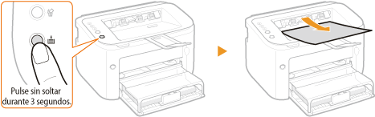

0KXF-023
Mantenga pulsada la tecla  (Papel) del equipo durante tres segundos para imprimir una lista parcial de opciones de red. Ello le permitirá comprobar las opciones de IPv4, la dirección MAC y la configuración de red cableada/inalámbrica. El formato de la lista de opciones está preparado para ser impreso en papel de tamaño A4. Antes de imprimir, cargue papel de tamaño A4 en la bandeja multiuso o en la ranura de alimentación manual. Carga de papel en la bandeja multiuso Carga de papel en la ranura de alimentación manual
(Papel) del equipo durante tres segundos para imprimir una lista parcial de opciones de red. Ello le permitirá comprobar las opciones de IPv4, la dirección MAC y la configuración de red cableada/inalámbrica. El formato de la lista de opciones está preparado para ser impreso en papel de tamaño A4. Antes de imprimir, cargue papel de tamaño A4 en la bandeja multiuso o en la ranura de alimentación manual. Carga de papel en la bandeja multiuso Carga de papel en la ranura de alimentación manual
(Papel) del equipo durante tres segundos para imprimir una lista parcial de opciones de red. Ello le permitirá comprobar las opciones de IPv4, la dirección MAC y la configuración de red cableada/inalámbrica. El formato de la lista de opciones está preparado para ser impreso en papel de tamaño A4. Antes de imprimir, cargue papel de tamaño A4 en la bandeja multiuso o en la ranura de alimentación manual. Carga de papel en la bandeja multiuso Carga de papel en la ranura de alimentación manual
Ejemplo de impresión:

 Select Wired/Wireless LAN
Select Wired/Wireless LANMuestra si la conexión es mediante red cableada o red inalámbrica.
 Ethernet Driver Settings
Ethernet Driver SettingsMuestra las opciones de red cableada (Ethernet) y la dirección MAC.
Auto Detect
Muestra si está activada o desactivada la opción de detección automática del modo de comunicación y el tipo de Ethernet.
Muestra si está activada o desactivada la opción de detección automática del modo de comunicación y el tipo de Ethernet.
MAC Address
Muestra la dirección MAC en la red cableada.
Muestra la dirección MAC en la red cableada.
Communication Mode
Muestra el modo de comunicación (Medio dúplex/Dúplex completa).
Muestra el modo de comunicación (Medio dúplex/Dúplex completa).
Ethernet Type
Muestra la opción del tipo de Ethernet (10BASE-T/100BASE-TX).
Muestra la opción del tipo de Ethernet (10BASE-T/100BASE-TX).
 TCP/IP Settings
TCP/IP Settings Listas de opciones de IPv4.
Auto Obtain
Muestra si la dirección IP se ha asignado automáticamente a través de un protocolo como DHCP. "On" aparece si el direccionamiento automático está activado.
Muestra si la dirección IP se ha asignado automáticamente a través de un protocolo como DHCP. "On" aparece si el direccionamiento automático está activado.
Select Protocol
Muestra el protocolo que se utiliza para asignar la dirección IP automáticamente.
Muestra el protocolo que se utiliza para asignar la dirección IP automáticamente.
Auto IP
Muestra si la IP automática está activada o desactivada.
Muestra si la IP automática está activada o desactivada.
IP Address
Muestra la dirección IP.
Muestra la dirección IP.
Subnet Mask
Muestra la máscara de subred.
Muestra la máscara de subred.
Gateway Address
Muestra la dirección de la puerta de enlace.
Muestra la dirección de la puerta de enlace.

La dirección IP no está correctamente configurada si aparece como "0.0.0.0".
Si conecta el equipo a varios concentradores de conmutación o a puentes para redundancia podrían producirse errores de conexión aunque la dirección IP esté configurada correctamente. Este problema puede solucionarse configurando un intervalo de tiempo de espera antes de que el equipo inicie la comunicación. Configuración de un tiempo de espera para conectarse a una red
 Wireless LAN Settings
Wireless LAN Settings Muestra las opciones de red inalámbrica y la dirección MAC.
MAC Address
Muestra la dirección MAC en la red inalámbrica.
Muestra la dirección MAC en la red inalámbrica.
SSID Settings
Muestra las opciones de SSID.
Muestra las opciones de SSID.
Security
Muestra las opciones de seguridad que se están aplicando en esos momentos. Si no se han configurado las opciones de seguridad, aparecerá el mensaje "None".
Muestra las opciones de seguridad que se están aplicando en esos momentos. Si no se han configurado las opciones de seguridad, aparecerá el mensaje "None".
Wireless LAN Status
Muestra el estado de conexión (intensidad de la señal) de la red inalámbrica. Si el equipo no está conectado, aparecerá el mensaje "Inactive" o "Disconnected".
Muestra el estado de conexión (intensidad de la señal) de la red inalámbrica. Si el equipo no está conectado, aparecerá el mensaje "Inactive" o "Disconnected".
 |
|
Tenga en cuenta que en esta lista de opciones no puede comprobar las opciones de IPv6 y algunas otras opciones de red. Si desea comprobar todas las opciones de red, imprímalas seleccionando [Impresión de estado de red] en la Ventana de estado de la impresora. Impresión de listas de opciones
|